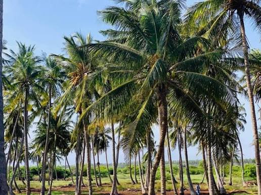
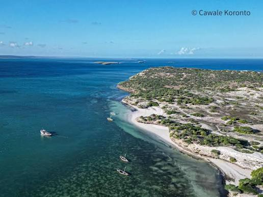
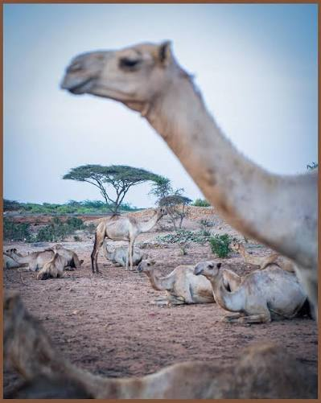

Meelaha Caanka Ah Ee Kismayo
1. Gobweyn (Kulanka Webiga iyo Badda)

Gobweyn waa goob dabiici ah oo fagaarayaasha dalxiiska caalamka naadir ku ah, halkaas ay si mucjiso ah ugu kulmaan biyaha qaboobay ee Webiga Jubba iyo biyaha dhalaalaya ee Badweynta Hindiya.
2. Jasiiradaha Bajuni (Bajuni Islands)

Geesaha jasiiradaha ah ee ku teesan xeebta Kismayo waxay caan ku yihiin hawo nadiif ah, ciid cad, iyo biyo buluug ah oo saafi ah. Waa goob ku habboon dabaasha iyo quusidda.
3. Caweyska Barcaleen (Barcaleen Nightlife)

Barcaleen waa halbawlaha caweyska habeenkii ee magaalada Kismayo. Waa goob casri ah oo dadka deegaanka iyo dalxiisayaashu u soo bixi jireen si ay ugu raaxaystaan neecawda habeenkii, cuntooyinka fudud, iyo wada-sheekaysiga billicsan ee magaalada.